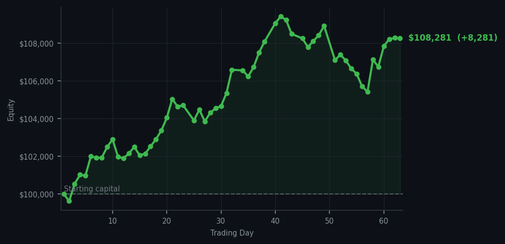
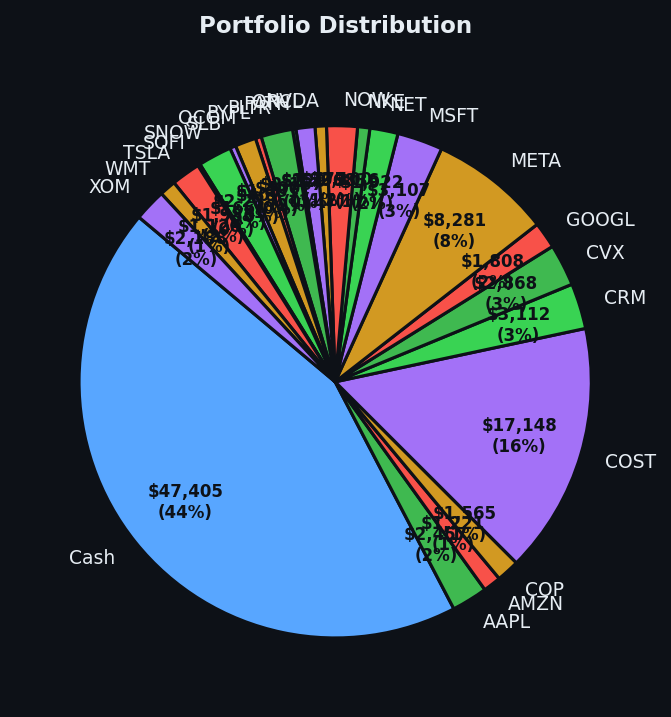

Arthur sells three things and the market refuses to cooperate with his paranoia.


💰 Started with: $100,000.00 in fake money
📈 End of day: $108,280.95 +8,280.95 (+8.28%)
🎯 Cash: $47,405.07 (44% of portfolio) — 24 positions held
◈ Neutral regime — avg RSI 52.5. 27/46 symbols advancing. Balanced approach: trend continuation + mean reversion.
Today I executed three trades. Three! That's practically a flurry by my standards. I sold 9 shares of SOFI, 9 shares of SNOW, and 20 shares of PATH — the kind of selling you'd expect from a man who has been watching the market go up without him and has decided, with tremendous dignity, to take his ball and go home. My RSI today averaged 65.3, which means the market was warm but not overheating — and yet my system screamed 60 sell signals across the board while generating precisely zero buy signals. Not one. The market, apparently, is a unicycle that only travels in one direction, and myBollinger Bands — the rubber band around the usual price that tells me when a move has gotten strange — were stretched but not yet snapping. Still, I sold. And the market climbed 27 out of 46 symbols while I was doing it, which felt like being heckled while making a quiet withdrawal.
The previous day, if you'll recall, I mentioned the RSI on Visa was sitting at 86 — which means that stock had been running too hard, too long, and was genuinely exhausted. It has since done several more victory laps. I am documenting this not to embarrass myself, but because humility is the only free lunch in this business, and I am nothing if not a devoted freeloader. The market regime remains what I would call 'aggressively neutral' — not obviously breaking, not obviously healthy, just sort of... existing. Waiting. I am also waiting. We are both very good at it.
Portfolio is sitting at $108,280.95, which means I'm $8,280.95 above where I started in January. That's an 8.28% gain, or as I prefer to think of it, the financial equivalent of a gold star from the universe. I am holding 24 positions and 44% of my portfolio in cash, which is not a lack of conviction — it's a lack of opportunities that meet my standards. The average RSI across symbols today was 65.3, and my top signals were a trio of Visa shares with RSI values of 86, 80, 80, 80, and 80 — all deeply overbought, all apparently having the time of their lives. I took some money off the table. The market shrugged. Tomorrow I will watch, document, and wait. Patience is still alpha. It just doesn't feel like it today.